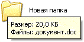

Размер файла и папки
Каждый файл и каждая папка с файлами занимает на компьютере определенное место. То есть у всех объектов на ПК есть свой объем, другими словами, вес или размер.
Мы привыкли к таким понятиям, как граммы и килограммы, метры и километры. В компьютере тоже есть свои единицы измерения. В них мы будем измерять файлы и папки. Другими словами, мы будем определять сколько «весит» тот или иной объект. Исчисляется этот «вес» в битах, байтах, килобайтах, мегабайтах, гигабайтах и терабайтах.
Самое маленькое значение – биты. Они настолько малы, что такого объема даже нет в компьютере. Но из них складываются байты (1 байт = 8 бит). Вот они и следующие за ними единицы нам и интересны.
Рассмотрим схему компьютерных размеров:

Расшифровывается она так:
1 КБ = 1024 байта; 1 Мб = 1024 Кб; 1 Гб = 1024 Мб
Здесь не указаны терабайты (ТБ), так как это очень большой объем – он состоит из 1024 гигабайт (ГБ).
А теперь подробнее:
- В одном КБ (килобайте) находятся 1024 байта
- В одном МБ (мегабайте) находятся 1024 КБ (килобайта)
- В одном ГБ (гигабайте) находятся 1024 МБ (мегабайта)
Для чего же нам нужны эти значения?! Например, чтобы определить, сможем ли мы записать данные на флешку.
Для того чтобы можно было это определить, нужно знать, сколько информации на нее помещается. Обычно объем начинается от 4 ГБ и может достигать нескольких ТБ.
Размер указан на самом носителе. Но также его можно узнать, вставив флешку в ПК и открыв «Этот компьютер».
У разных носителей информации разный объем:
- Флешка : от 4 ГБ
- CD : 700 МБ
- DVD : от 4 ГБ
Стандартный объем DVD диска равен 4,7 Гб. Но он может быть и двусторонним, то есть записывать можно и с одной и со второй стороны. У таких носителей размер 9,4 Гб. Также существуют двухслойные диски, но они менее распространены. У них объемы следующие: 1-сторонние 2-слойные – 8,5 Гб; 2-сторонние 2-слойные – 17,1 Гб.
Как узнать размер
Чтобы определить вес объекта, наведите на него курсор (стрелку) и задержите на несколько секунд. Появится небольшое окошко с характеристиками. Как видно на картинке, в этой характеристике указан вес:
Если при наведении ничего не появляется, то щелкните правой кнопкой мыши. Из открывшегося списка выберите пункт «Свойства». Откроется окошко, в котором будет указан размер.
А теперь потренируемся:
Задачка:
Имеется файл весом 30 Мб. Сможем ли мы записать его на диск? А на флешку объемом 8 Гб?
Решение:
- На CD помещается 700 Мб. Наш объект весит 30 Мб. 700 больше, чем 30. Вывод: поместится.
- На DVD помещается 4,7 Гб. Один гигабайт равняется 1024 мегабайт. То есть на один DVD помещается около 5000 Мб. А уж 5000 намного больше, чем 30. Вывод: поместится.
- Нам дана флешка размером 8 Гб. В одном Гб содержится 1024 Мб. 1024 больше, чем 30.
Вывод: на флешку файл тоже поместится.